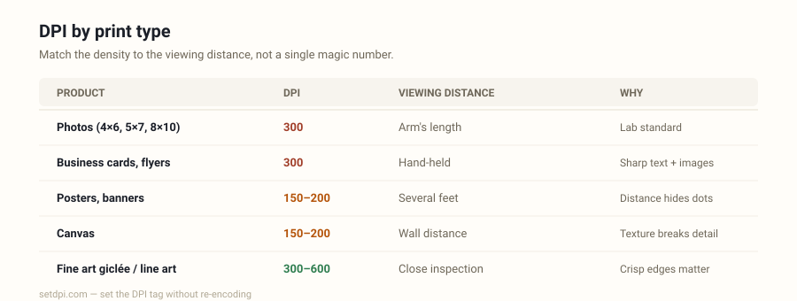

What DPI for Printing? Photos, Posters, Cards and Fine Art
The right DPI for printing depends on the product and the viewing distance. 300 for anything held in the hand. 150–200 when people stand back. Then confirm you have the pixels.

DPI for printing, by product
DPI for printing is two questions pretending to be one. The first is the integer a lab, a RIP, or an upload form wants to read in the file — almost always 300 for photos, sometimes 150 or 200 for large format. The second is whether you have enough pixels for the ordered size at that integer. Formula: pixels needed = inches × DPI. A correct tag on a short file still prints soft. A 72 tag on a file that already has the pixels still fails preflight. Do both.
Photo prints, 4 × 6 to 8 × 10. 300 DPI. This is the photo-lab habit and it is the right one: the print is held at reading distance, and 300 samples per inch sits at the edge of what the eye resolves there. A 4 × 6 needs 1200 × 1800 px; an 8 × 10 needs 2400 × 3000 px. Phone photos often have the pixels and a 72 tag. Rewrite 300. Do not upsample a 640-pixel-wide image and call it an 8 × 10.
Large posters, 18 × 24 and up. 150–200 DPI is fine, because viewing distance does the rest. People stand several feet from a 24 × 36. At that range the eye does not demand 300. An 18 × 24 at 150 is 2700 × 3600 px; at 300 it is 5400 × 7200 — a file many cameras cannot supply, for a sharpness gain nobody will see from the aisle. Use 150 DPI or 200 DPI when the shop’s poster spec says so.
Business cards and flyers. 300. Cards are held six inches from someone’s face. Type, logos, and a headshot all sit on a small sheet; a 150 tag (or a 150-effective file) shows up as soft edges. A US business card is 3.5 × 2 in, so 1050 × 600 px at 300 — easy for a photograph, tight for a logo that was drawn at 400 px. Bleed and crop marks are a separate conversation; the density tag is still 300.
Fine-art giclée. 300–600. Pigment printers can address more than a minilab. Photographers usually send 300 and let the RIP handle the rest. If the shop asked for 600 and the capture has the samples — a medium-format file, a 600 DPI scan of a print — write 600. Inventing 600 from a 12-megapixel JPEG does not make a sharper giclée; it makes a larger, softer one.
Line art and text-heavy pages. 600 and up. Photographs hide a coarse grid in tone. Hairlines, 8-point type, and technical drawings do not. A 300 DPI scan of a contract with small footnotes looks crunchy; a 600 or 1200 DPI scan of the same page holds the strokes. This is capture DPI, which actually creates pixels. Relabelling a 200 DPI scan as 600 is not the same operation.
Canvas. 150–200. Canvas is viewed from a few feet away, and the weave already breaks up fine detail. 300 is harmless if you have the pixels. It is not required the way a 4 × 6 lab print requires it. A 16 × 20 canvas at 150 is 2400 × 3000 px — the same pixel budget as an 8 × 10 photo at 300.
T-shirt / DTG. 300. Direct-to-garment shops treat the art like a close-view print, not a billboard. Send 300, with enough pixels for the print area (a 12-inch-wide chest print wants 3600 px across). Garment color and underbase matter more than chasing 600.
For the full ladder of standard values — including 72, 96, and 1200 — see standard DPI settings. For why a 300 DPI file and a 72 DPI file look the same on your laptop, see what 300 DPI looks like.
Pixels needed at 300 DPI
When the product wants 300, this is the pixel grid. Width in inches × 300, height in inches × 300. Orientation follows the print; swap the numbers for portrait vs landscape.
| Print size | Pixels at 300 DPI |
|---|---|
| 4 × 6 in | 1200 × 1800 px |
| 5 × 7 in | 1500 × 2100 px |
| 8 × 10 in | 2400 × 3000 px |
| 11 × 14 in | 3300 × 4200 px |
| 16 × 20 in | 4800 × 6000 px |
| 24 × 36 in | 7200 × 10800 px |
A 24 × 36 at 300 is a huge file. That is why poster work drops to 150–200: the same 24 × 36 at 150 is 3600 × 5400 px, which a modern phone can actually produce. If your file is short of the row above, you have three honest options — print smaller, print at a lower DPI the viewing distance can justify, or get a larger original. A fourth option, “enhance” websites that manufacture pixels, is a new picture, not a DPI conversion.
Need the other direction — you have pixels and want inches? Inches = pixels ÷ DPI. The DPI Calculator does that live. The DPI Checker does it for a real JPEG or PNG, reading the tag instead of assuming 72.
Print shop says “DPI too low”
Two different failures get the same error message. Separate them before you resample anything.
The tag is 72 (or 96, or missing) and the pixels are fine. Phone exports, screenshots, and “Save for Web” files write a screen default into the density field. A 4000 × 3000 px photo tagged 72 claims a 55-inch-wide print, so a preflight script that divides pixels by claimed inches reports ~72 DPI and rejects you. The photograph was always enough for an 8 × 10 at 300. Rewrite the tag. That is what Increase Image DPI is for — a lossless metadata edit, with a warning that it is not an enlarger. Confirm the current number first on the DPI Checker.
The pixels themselves are short. An 800 × 600 px image tagged 300 prints 2.7 × 2.0 in. Tagging it 300, 600, or 1200 does not change that. Effective resolution on paper is pixels ÷ printed inches, regardless of the tag. If you drop those 800 pixels across 8 inches of a flyer, you printed at 100 DPI. No density converter fixes a missing original. Crop tighter, print smaller, or reshoot.
A shop that prints at 1440 DPI is describing nozzle addressability, not asking you to tag the photo 1440. Send 300 (or whatever they printed on the form) with enough pixels for the size. Do not chase the hardware number.
Set the tag before you upload
Labs, journal portals, KDP interiors, and Etsy printables often reject on the integer before a human looks at the picture. Set the density field to the number they asked for — almost always 300 — then confirm pixels ÷ 300 covers the print. Convert Image to 300 DPI rewrites JPG and PNG metadata in your browser; nothing is uploaded to this site, and the pixels are not re-encoded. If you need to plan a size you do not have a file for yet, use the DPI Calculator to get the pixel target first.
Coming from a 72 default? 72 DPI to 300 DPI is the same engine with copy aimed at that specific jump. Custom values and batch work live on the homepage.